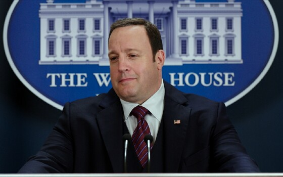
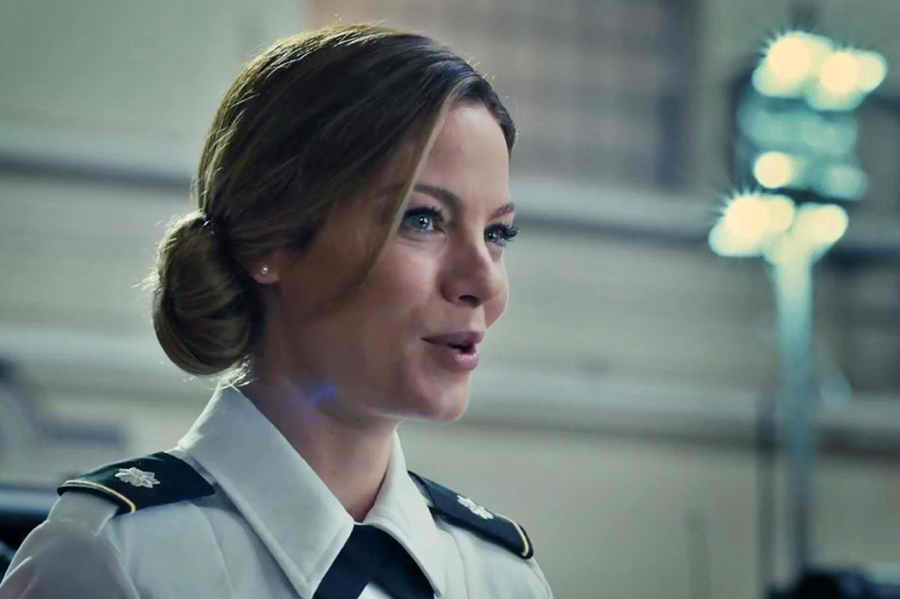
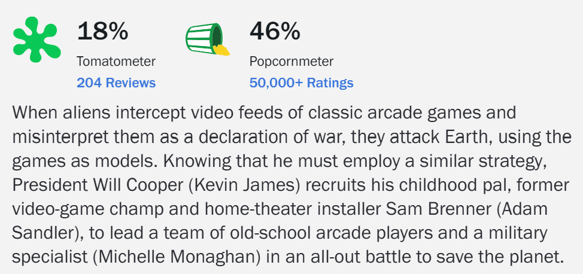

Cast Top 3 (Besides Adam Sandler)

Kevin
James

Michelle
Monaghan
Peter
Dinklage

Why I Like It
Pixels is the first movie to crack my top ten list. I haven't rewatched this movie as much as I have other ones on this list, but I really enjoyed this one when I watched it as a kid. I think that this movie has one of the more interesting plots that any Adam Sandler movie has. The 80's feel of this movie from the arcade games to the soundtrack is very strong and nostalgic. The humor lands, and the action scenes are well made with good suspense. This movie is a good watch for anyone who wants to borrow some nostalgia and a great watch for anyone who grew up or lived through the 80's.